Panel de Control
Gestión de citas médicas y estudios de alta especialidad
| Código | Paciente | Estudio | Fecha y Hora | Estado | Acciones |
|---|
Distribución de Citas por Estudio
Cantidad total de solicitudes recibidas por especialidad médica
Preparación Médica Común
Acudir sin desodorante, talco, crema o loción en el área de axilas y mamas. Ropa de dos piezas preferiblemente.
Ayuno mínimo de 6 horas. Examen de creatinina sérica reciente para verificar función renal del paciente.
Cuestionario de compatibilidad magnética. Sin objetos metálicos, prótesis dentales removibles u horquillas.
| Código | Paciente | Estudio | Fecha y Hora | Estado | Acciones |
|---|
MANUAL DE USO
AURUM Centro de Imagen Oncológica y Diagnóstico
Hola te damos la bienvenida al Sistema de Administración de AURUM Centro de Imagen Oncológica y Diagnóstico. Este manual te guiará paso a paso sobre cómo usar tu nueva plataforma para gestionar las citas y los pacientes de la clínica.
1. Acceso al Sistema (Inicio de Sesión)
Para entrar a tu panel de control, sigue estos pasos:
- Ingresa a la página de administración desde tu navegador (por ejemplo, desde el sitio principal haciendo clic en tu acceso privado o yendo a la URL del administrador).
- Verás una pantalla de "Bienvenido de nuevo".
- Escribe tu Correo Electrónico y tu Contraseña. (Si necesitas ver la contraseña que estás escribiendo, haz clic en el icono del "ojito" a la derecha).
- Haz clic en el botón Ingresar.
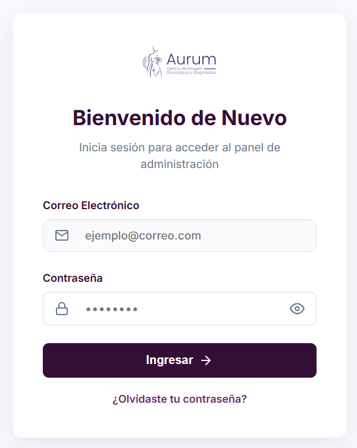
2. Gestión de Citas (Tu pantalla principal)
Una vez que entres, la primera pantalla que verás es la de Gestión de Citas. Aquí es donde harás la mayor parte de tu trabajo.
¿Qué puedes ver aquí?
En la parte de arriba verás 4 tarjetas con colores que te dan un resumen rápido de tu día:
- Citas Registradas: El total de todas las citas.
- Pendientes: Citas nuevas que aún debes confirmar.
- Confirmadas: Citas que ya están agendadas y listas.
- Tasa de Confirmación: El porcentaje de éxito de tus citas.
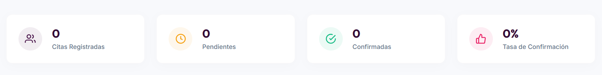
Buscar y Filtrar
- Buscador: Hay una barra de búsqueda donde puedes escribir el nombre de un paciente, su teléfono o correo para encontrar su cita rápidamente.
- Filtros: También puedes usar los menús desplegables para ver solo citas de un estudio en específico (ej. solo Ultrasonidos) o por estado (ej. solo Confirmadas).
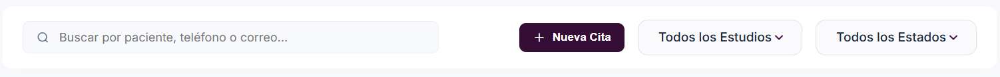
Ver detalles o Editar una cita
En la tabla de citas, cada paciente tiene botones de acciones (del lado derecho). Si haces clic en el botón para Ver detalles, se abrirá una ventana donde podrás:
- Cambiar el Estado de la cita (pasarla de Pendiente a Confirmada, Cancelada o Completada).
- Cambiar la Fecha o la Hora si el paciente se reprograma.
- Escribir Notas Clínicas (cualquier observación importante sobre el paciente).
Recuerda siempre hacer clic en "Guardar Cambios" al terminar.
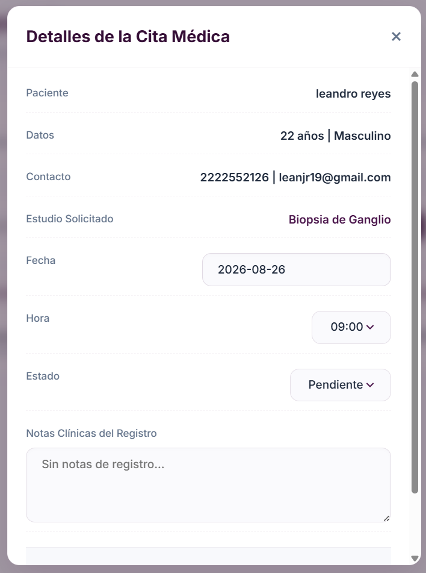
Crear una Nueva Cita (Manualmente)
Si un paciente te llama por teléfono o asiste en persona para agendar:
- Haz clic en el botón morado "+ Nueva Cita".
- Llena sus datos básicos (Nombre, Teléfono, Correo, Edad y Sexo).
- Selecciona el Estudio, la Fecha y la Hora que desea.
- Haz clic en "Registrar Cita".
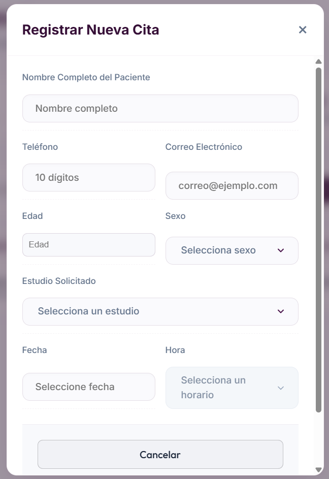
3. Estadísticas
En el menú lateral izquierdo, encontrarás la opción Estadísticas. Esta sección es perfecta para ver cómo va la clínica de forma visual:
- Verás una gráfica que te muestra cuáles son los estudios más solicitados. Así sabrás qué servicios son los más populares.
- También encontrarás una sección de "Preparación Médica Común", que es una guía rápida con los requisitos (ayunos, ropa sugerida, etc.) para los estudios más comunes. ¡Muy útil para tener la información a la mano cuando hables con los pacientes por teléfono!
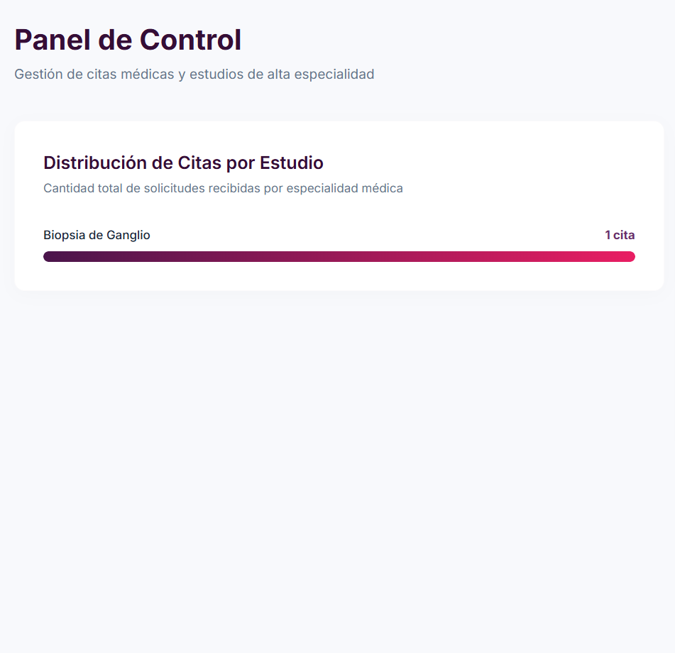
4. Historial Clínico (Archivo de Pacientes)
La tercera opción del menú izquierdo es el Historial Clínico. Aquí se guardan las citas que ya pasaron (las Completadas o Canceladas). Funciona como un archivo para que nunca pierdas la información de quién ha visitado la clínica.
- Puedes buscar pacientes por nombre.
- Puedes filtrar por fechas específicas.
- Descargar PDF: Hay un botón especial llamado "Historial" que tiene un ícono de descarga. Si haces clic ahí, el sistema generará y descargará un documento PDF con la lista de los pacientes que estás viendo en la pantalla, ideal para imprimirlo o tener un reporte del día/semana.
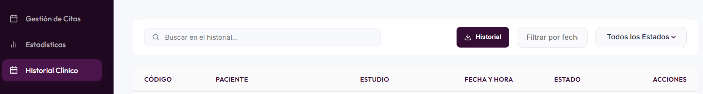
5. Salir del Sistema
Cuando termines tu jornada o si estás usando una computadora compartida, es importante cerrar tu sesión por seguridad:
- Ve a la parte inferior del menú lateral izquierdo.
- Haz clic en el botón rojo "Cerrar Sesión".
- Si solo quieres volver a la página web que ven los pacientes, haz clic en "Sitio Público".
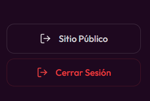
Guía de Navegación - Sitio Web de AURUM (Pacientes)
Esta guía explica todo lo que tus pacientes encontrarán al visitar el sitio web oficial de AURUM Centro de Imagen Oncológica y Diagnóstico. La página está diseñada para ser rápida, informativa y muy fácil de usar desde cualquier celular o computadora.
1. Menú de Navegación
En la parte de arriba de la pantalla (o abajo, si están en un celular), los pacientes verán un menú que los lleva rápidamente a las secciones más importantes de la página:
- Inicio: Regresa a la portada principal.
- Nosotros: Muestra el perfil médico de la doctora.
- Servicios: Lista todos los estudios que realiza la clínica.
- Encuéntranos: Muestra el mapa, la dirección y horarios.
- Agendar Cita: Un botón destacado que los lleva directo al formulario de citas.
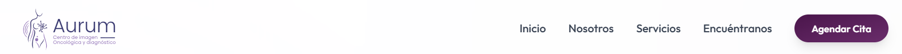
2. Sobre Nosotros (Perfil Médico)
En esta sección, los pacientes pueden conocer a la especialista a cargo: la Dra. Brigitte Reyes Palmero.
Podrán ver su trayectoria profesional, su licenciatura y sus altas especialidades en Radiología Oncológica y Neuroimagen, junto con sus números de cédula. Esto genera confianza y seguridad antes de agendar un estudio.
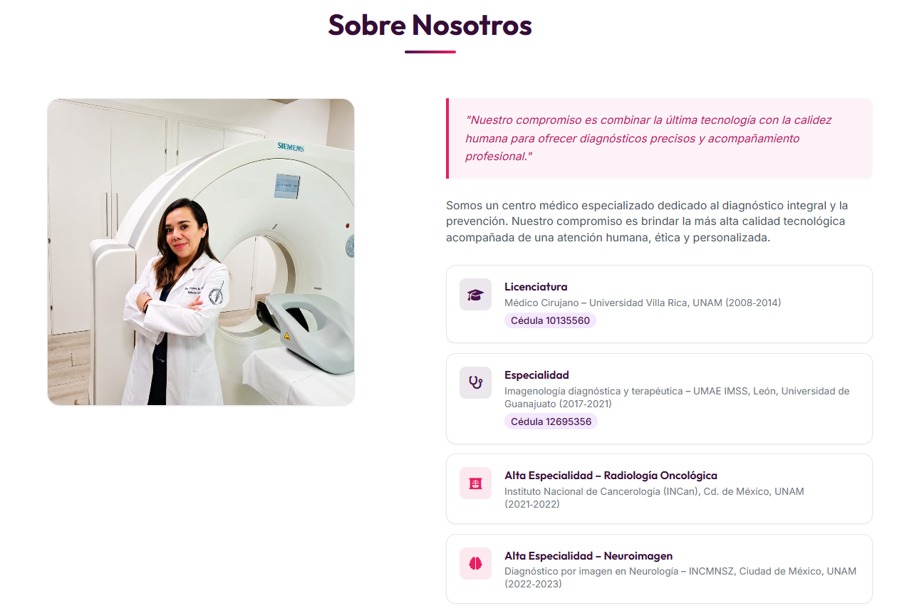
3. Nuestros Servicios
Aquí el sitio le explica a los pacientes qué tipo de estudios pueden realizarse en la clínica, divididos de manera clara:
- Catálogo de Ultrasonidos: (Abdomen, renal, pélvico, mamario, Doppler, etc.).
- Biopsias y Procedimientos: (Tiroides, mama, drenajes).
- Atención a Médicos Remitentes: Un aviso para que otros doctores sepan que pueden enviar a sus pacientes aquí con total confianza.
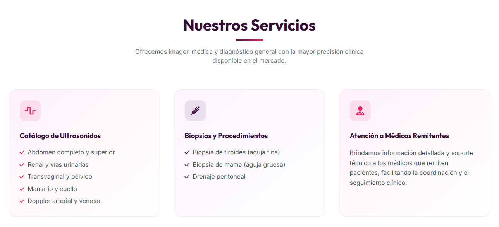
4. Encuéntranos (Ubicación y Contacto)
Si un paciente necesita saber cómo llegar o a qué hora abren, aquí tiene todo a la mano:
- Dirección exacta y horarios de atención: (Lunes a Viernes de 09:00 a.m. a 02:00 p.m.).
- Contacto por WhatsApp: Hay un botón verde; si el paciente lo toca desde su celular, abrirá automáticamente WhatsApp para mandar un mensaje directo a la clínica.
- Mapa Interactivo: Un mapa de Google Maps que pueden acercar o alejar, y un botón de "Cómo llegar" que abre el GPS de su celular para guiarlos hasta la puerta de la clínica.
- Métodos de pago aceptados.
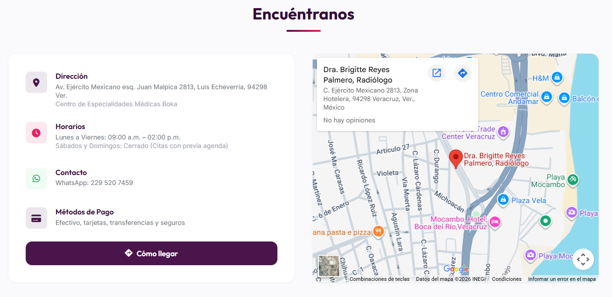
5. Galería en Acción
Un carrusel de imágenes (que se mueve automáticamente) donde los pacientes pueden ver fotos de las instalaciones, del equipo médico de alta tecnología (los ultrasonidos) y del ambiente de la clínica.
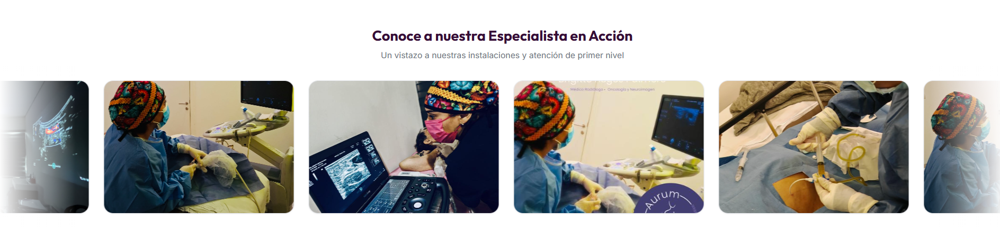
6. Agendar Cita en Línea
Esta es la herramienta más útil para captar pacientes las 24 horas del día. Al final de la página, encontrarán un formulario sencillo que deben llenar para pedir una cita.
¿Qué datos llenan?
- Nombre completo.
- Número de teléfono (para que puedas llamarles).
- Edad y Sexo.
- El tipo de estudio que necesitan.
- La Fecha y Hora en la que les gustaría asistir.
¿Qué pasa después?
Una vez que el paciente da clic en "Agendar", la pantalla le mostrará un mensaje de éxito. Inmediatamente, esa información viajará en silencio hacia tu Panel de Administración. Tú la verás en tu sección de "Pendientes" para que puedas revisar tu agenda y al confirmar el paciente recibirá un correo con la cita confirmada.
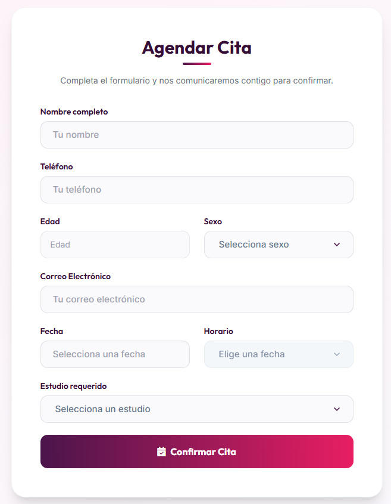
¡Tu panel está listo para usarse!
Cualquier duda adicional, contacta a soporte técnico.